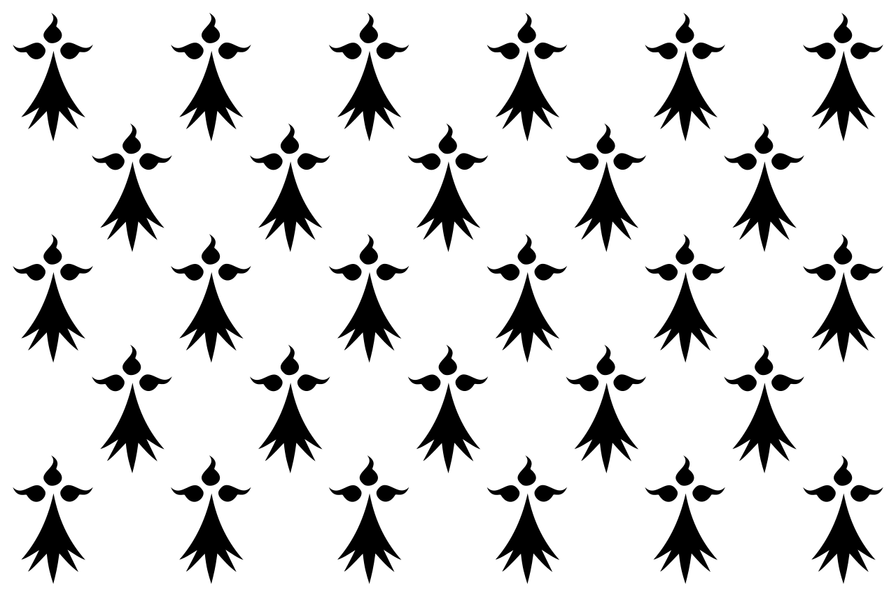
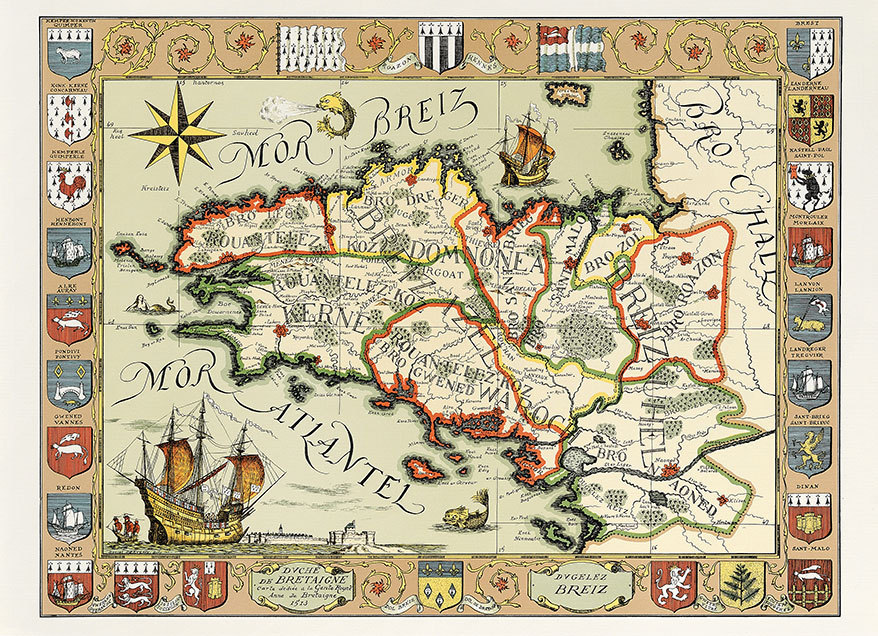
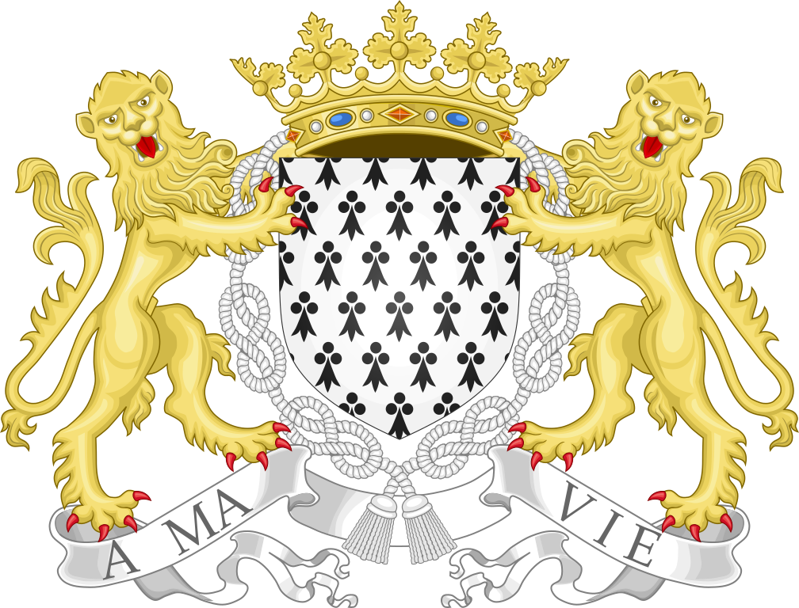
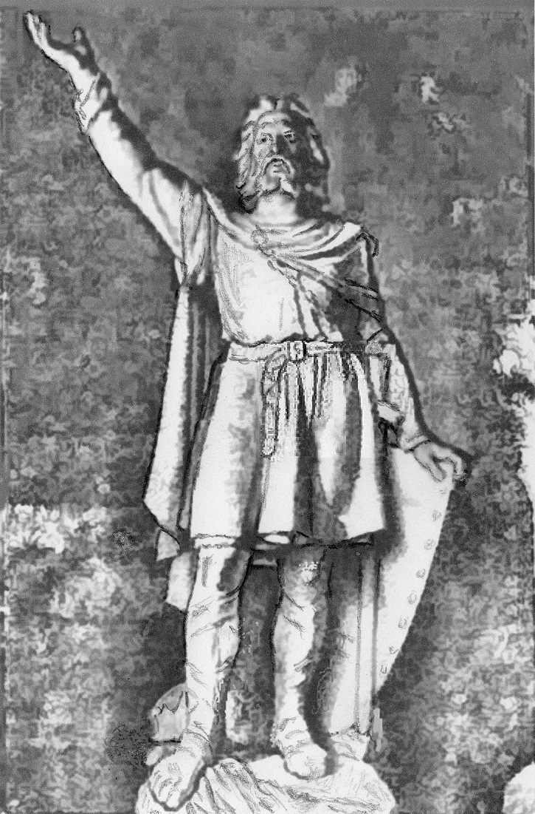
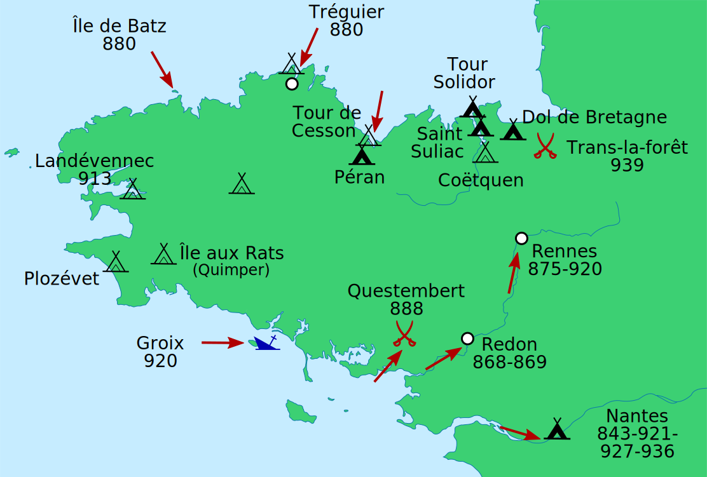
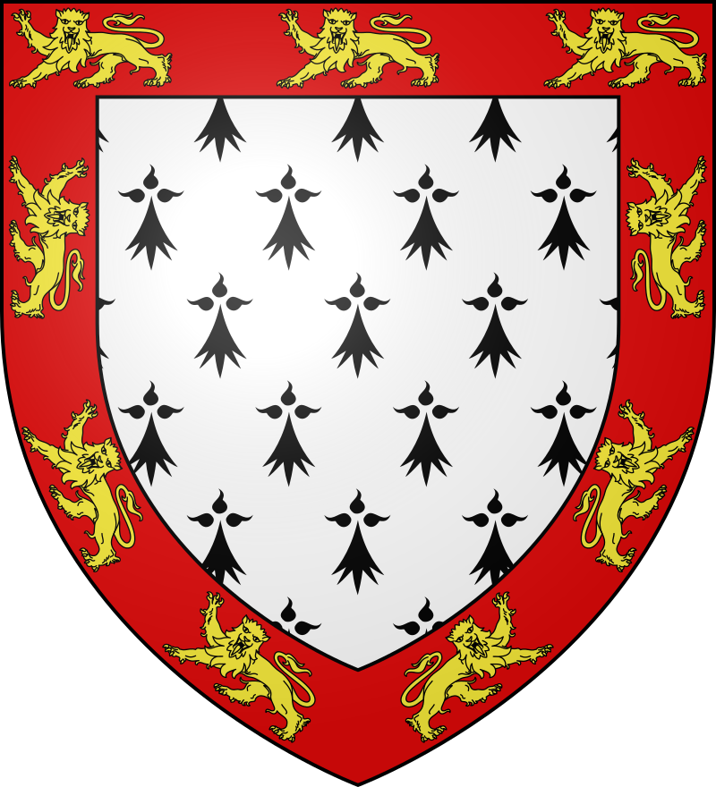

Le Duché de Bretagne (Dugelezh Breizh), a été fondé en 939 suite au Royaume de Bretagne. Ses frontières sont celles qui ressemblent le plus aux frontières actuelles de la Bretagne, Loire-Atlantique incluse. Soit environ Environ 32 000 km². Français et Latin y sont langues officielles bien que le Breton et le Gallo sont les uniques langues parlées. De religion catholique, le duché est un des nombreux états chrétiens monarchiques d'Europe. La monnaie ducale bretonne est le Double Denier. La population est maintenue entre 500 000 et 1 000 000 d'habitants au cours des siècles.
|  |
 |
 |
| Drapeau du Duché de Bretagne |
Carte |
Armoiries du Duché de Bretagne |
Son premier Duc est Alain II de Bretagne, il devient duc de Bretagne après avoir chassé les Normands du pays. Il refuse en 942 le titre de Roi de Bretagne et choisit celui de Duc. Le duché sera ensuite dirigé successivement par les maisons des grands pays bretons de Nantes, Rennes et de Cornouaille. La Guerre de Succession de Bretagne fera remporter le Duché à la maison de Montfort, la dynastie d'Anne de Bretagne.
|  |
 |
 |
| Alain II de Bretagne |
Raids Vikings en Bretagne |
Armoiries de Jean De Monfort |
La Guerre de Bretagne débute en 1487, suite à cette guerre, le Duché de Bretagne perd son indépendance et devient une province du domaine royal français. Le processus d'Union de la Bretagne à la France se finira en 1532, mais ne sera effectif qu'en 1547. La Province de Bretagne possèdera une autonomie jusqu'à la Révolution Française.
 |
| Carte de la Guerre de Bretagne |